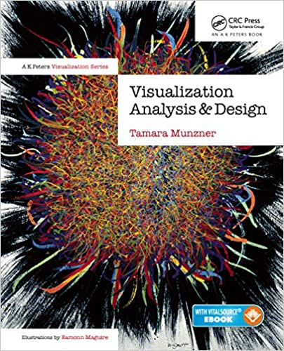

This course will cover topics in data visualization and HCI that focuses on evaluation, specifically user study methodologies, techniques, and application areas. Students will learn about different forms of evaluations in general, and types of evaluations in data visualization, qualitative and quantitative user study methodologies, lab, crowdsourced and remote methods of experimentation, grounded theory, and data analysis techniques, including statistical methods, and case studies. Advanced topics in HCI and data visualization, including measures of visualization effectiveness, interactivity (e.g., Fitt’s Law), eye tracking techniques and analysis, and perception and cognition principles will also be briefly touched upon. This course is mostly a seminar course but will consist of a significant project component to practice and obtain real evaluation experience. The final project will be the pilot run for a research project and interested students can join the actual research project during and/or after the semester.
Learning Outcomes
User studies are used in a wide array of fields beyond data visualization and HCI and is an important skill to have. Hopefully, students can take what they learned in this class and apply it to future projects and endeavors.
Upon completion of this course, students should be able to:
- Understand and identify why, when, how to conduct an evaluation of a visualization
- Apply the best type(s) of evaluation methodologies for different evaluation scenarios
- Design and execute an effective user study
- Write an IRB application for responsible and ethical research involving human subjects
- Identify best practices of user studies
- Conduct evaluations in accordance with standard responsible conduct of research criteria
- Explain the role of an Institutional Review Board (IRB) and ethically execute human subjects research
- Understand the differences between qualitative and quantitative evaluation techniques and know when to apply what
- Identify the most common types of qualitative and quantitative methods and techniques as applied to visualization evaluations
- Identify and apply appropriate analysis techniques for both qualitative and quantitative evaluations
- Learn about the appropriate statistical tests for a given evaluation
- Constructively critique and assess an evaluation in oral discussion form
- Effectively compose a formal paper review including constructive criticism and professional language
- Effectively communicate a user study and its results in written and oral presentation form
Prerequisites
Students should have the following qualifications:
- Required: Completed DS 4200 (Information Presentation and Visualization) or a similar course
- Required: Completed IS 4300 (Human Computer Interaction) or a similar course
- Proficiency in Python
- Optional but highly beneficial: IS 4800 (Empirical Research Methods), and MATH 3081(Probability and Statistics)
The assignments and projects in this course will expose students to a variety of programming languages including Javascript (i.e., D3), Python (e.g., matplotlib), and statistical tools (e.g., R). Prior familiarity and experience with these tools and languages, in particular web design, are very helpful to have as we cover the technical material quickly. → If students are unfamiliar with these languages and tools, in particular web basics including HTML/CSS, it is strongly recommended that students familiarize themselves with these languages early in the term. Students will be allowed to choose for most assignments which language(s) to use based on their existing skills and knowledge as the focus of this course is on evaluation theory.
Textbooks and Reference Materials
A good amount of course material will be drawn from the following two required and one optional textbooks(available through Northeastern’s Snell Library):
-  Visualization Analysis and Design by Tamara Munzner
- Essentials of Research Design and Methodology by Geoffrey R. Marczyk, David DeMatteo & David Festinger
I will choose relevant research papers for some of the required readings in class, in order for you to appreciate and get an idea of how the evaluation methods are evolving over time. I will also reference online tutorials to help you better grasp certain topics and concepts.
Course Components
Lectures and Class Participation
This is a mostly discussion and project based course. A typical class will consist of approximately 30 minutes of lecture materials from the instructor to introduce new concepts, ~20 minutes of in-class discussion on the topic and/or reading materials, and ~10 minutes of in-class activity. This might change depending on what we are learning and/or discussing in a given day. Classes will use discussion of specific published papers or other online resources to catalyze discussion around pre-curated topics. In-class activities will not be graded and are aimed at solidifying your understanding of certain topics and concepts. The course might also include few guest lectures from expert visualization researchers (this is subject to change).
Readings and Discussions
Every week, students will be given some assigned readings in advance to discuss in class. Interested students can also refer to optional readings that will be provided along with the required ones. The reading will be posted in the weekly class schedule. These readings will be drawn from the recommended textbooks as well as other freely available online material including journal publications. Few of these readings will be directly associated with the project assignments. Students are expected to read the assigned readings and be prepared to discuss them in class.
Assignments
Sometimes readings will be directly relevant for an assignment. These assignments will require students to complete snippets of user studies, such as writing and/or editing an IRB, writing an evaluation study proposal, creating surveys and questionnaires, conducting and open-coding interviews, apply grounded theory on existing literature, study design for lab and crowdsourced experiments, running data analysis on pre-curated user study data, collecting data, reporting results, etc. Students will get 1/2 week(s) to complete each assignment. The last assignment before the start of the final project will include all of these components of a mini user study. This will prime the students for the final project, where they will run design studies and report their findings in the form of an academic paper. The following assignments will be given to the students throughout the semester:
Assignment 1: Complete Responsible and Ethical Research CITY trainings
Assignment 2: Write a mock project proposal for a given research problem (problem provided by the instructor.
Assignment 3: Will focus on qualitative data analysis. Collect data by replicating the data collection method of the Data is Personal (Week 3 reading) paper by running the test on few friends/students and compare the results found by writing a 1 page report.
Assignment 4: Students will replicate one of the papers from a list of academic papers or come up with their own research question and run a miniscule user study project. This assignment will be graded on the basis of their inputs and not outputs (failure or success of the project). A very short 1/2 page(s) report will be required.
Final Project Assignments
The course will consist of one final project in which students will work in a group or in groups of 2 to apply the concepts learned in the course to real evaluations. The last 1 month of the course will be dedicated to the final project. Throughout this time, there will be mandatory project progress deadlines. In this project, students will propose their own novel visualization evaluation. Students will be required to write a final project report using the IEEE VIS short paper submission template, upload supplemental information and data to an online repository, and give an in-class short presentation. A formal set of requirements for the project assignments will be provided in a separate document. The topic of this final project will be as follows:
The use of visual embellishments or chart junk has been a longstanding contentious topic among proponents of two different school of thoughts . Many experts, such as Tufte and Cleveland take the stance that chart junk introduces unnecessary non-data ink and should be avoided in order to reduce distraction and interpretation effort in charts. They advocate the use of plain charts that maximize the data-ink, which is the ink used to strictly represent data in a chart. In contrast, many design experts- most notably Nigel Holmes - continue to use and encourage the use of visual embellishments in charts and consider them as enhancements for the visualization with added benefits of better engagement, approachability, and clarity. This mismatch in opinion about chart junk raises questions about its benefits, role in visualization and conditions under which it is appropriate to use. The final project will seek to clarify these controversies by building upon the famous study by Bateman et al. 2010 regarding chart junk. The project will investigate the effects of visual embellishments on participants’ comprehension accuracy, recall ability and preference of charts and its surrounding contexts. Unlike the original paper, this project will test these conditions in the presence of contextual excerpts surrounding the Charts, e.g. plain vs embellished visualizations in articles, excerpts, etc.
Responsible and Ethical Research
All students will need to complete Northeastern University approved training modules in “Responsible Research Conduct” and “Human Subjects Training” prior to the first assignment of the course. These trainings will also suffice for the final project of the course which will involve user studies. Upon completion of the training modules, students must provide the instructor with copies of their certificates of completion. If a student has already completed these courses as part of their research or another course, completion certifications must be provided to the teaching staff. (Links and instructions for completion of these training modules will be provided.)
Publication and Collaboration
The final project is designed to be a pilot run for the actual research project which is aimed to result in novel publishable work. The instructor will provide feedback and further information near the end of the semester regarding publication and collaboration opportunities for interested students. This will provide a great opportunity for students who have never published before or been part of a research project to gain experience for their future endeavors. Even if you decide not to collaborate in the research project after the semester, you will still get invaluable exposure and experience of conducting actual user studies and writing an academic paper. This experience will hopefully help you later in your own projects, and mold you into a better researcher.
Grades
Your grades will depend on the quality of your work. Grades will be broken down as follows:
- Class Participation: 15%
- Assignments: 45%
- Final Project: 40%
Course Schedule
I envision that there will be 2 classes of duration 1 to 1.5 hours each week. The tentative weekly course schedule is given in the table below. Please note that contents of this schedule may be subject to change if required.
Course Schedule

Uzma Haque Syeda
Contact: syeda.u@northeastern.edu
Fourth year Data Visualization PhD student with a focus on theory and methods of visualization design studies, evaluations, and a passion for facilitating data visualization for social welfare.